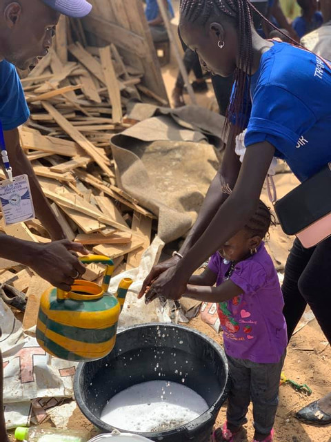

Les racines de l’espoir est une association humanitaire reconnue par le gouvernement du Sénégal au Numéro d’Identification Nationale des Entreprises et Associations (NINEA) 17505 et par la France sous le numéro ( W452014036 ) bientôt reconnu en Espagne et en Belgique. Sa mission est de faire du social, pour des personnes défavorisées en particulier chez les enfants malades, les enfants talibés et les enfants sans abris, de prôner un monde solidaire de partage et de compassion pour un lendemain meilleur, éradiquer la mendicité des enfants et aider les enfants malades avec une prise en charge totale. Elle a été créée le 15 septembre 2013 par des jeunes sénégalais dont la moyenne d’âge tournait autour de 23 ans. Bientôt 6 ans maintenant que Racines de l’Espoir s’est élargit avec plus de 1000 membres et est représentée dans différents pays dont la France, le Canada, le Maroc, l’Éthiopie, les États-Unis, etc. L’association intervient au Sénégal, en Côte d’Ivoire et au Burkina Faso. Cependant le grand siège reste au Sénégal à la villa R162 Hann Maristes 2, précisément chez la présidente fondatrice Safiètou Guèye. Toujours dans sa dynamique de venir en aide à la couche vulnérable, l’association les Racines de l’Espoir s’est récemment implanté à Thiès et dans les autres régions pour soutenir les personnes vulnérables qui y vivent et à fait de nombreuses activités.
|  | |||
|---|---|---|---|
|
Notre mission Les racines de l'espoir est une association humanitaire qui a pour mission de venir en aide aux personnes vulnérables et surtout redonner le sourire aux enfants malades et aux talibés. Lutter contre l'ichtyose congénital qui est une maladie rare. |
|
|---|---|
|
Notre vision Un lendemain meilleur pour les enfants en éradiquant la mendicité des enfants et une meilleure prise en charge des enfants malades a l'avenir. |